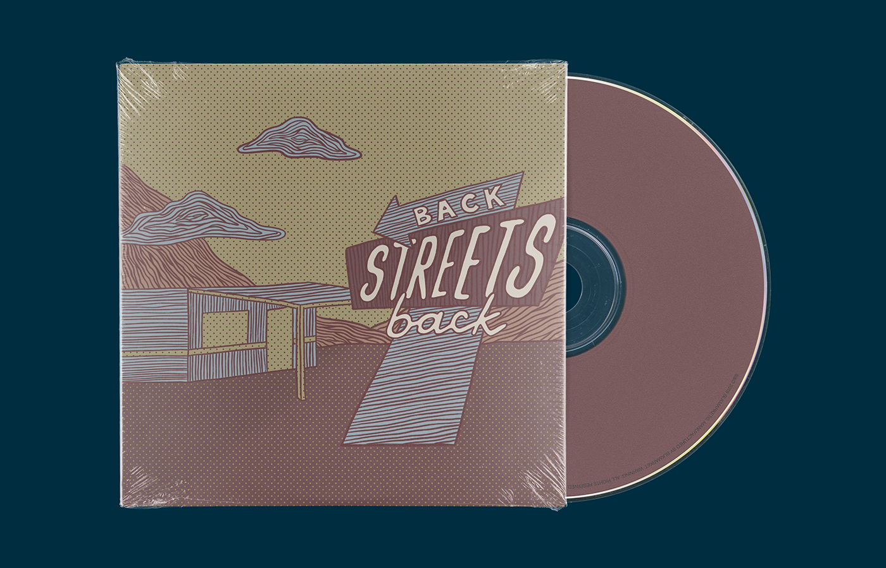
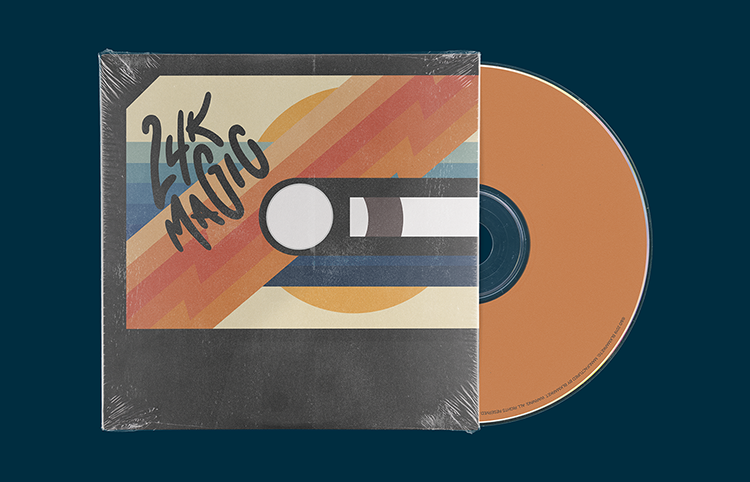
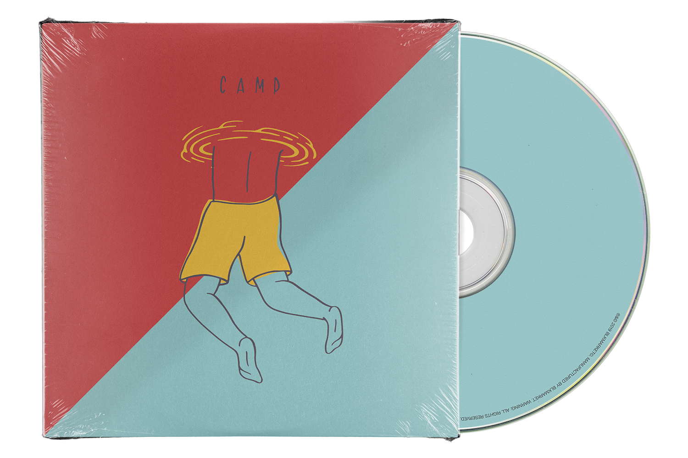
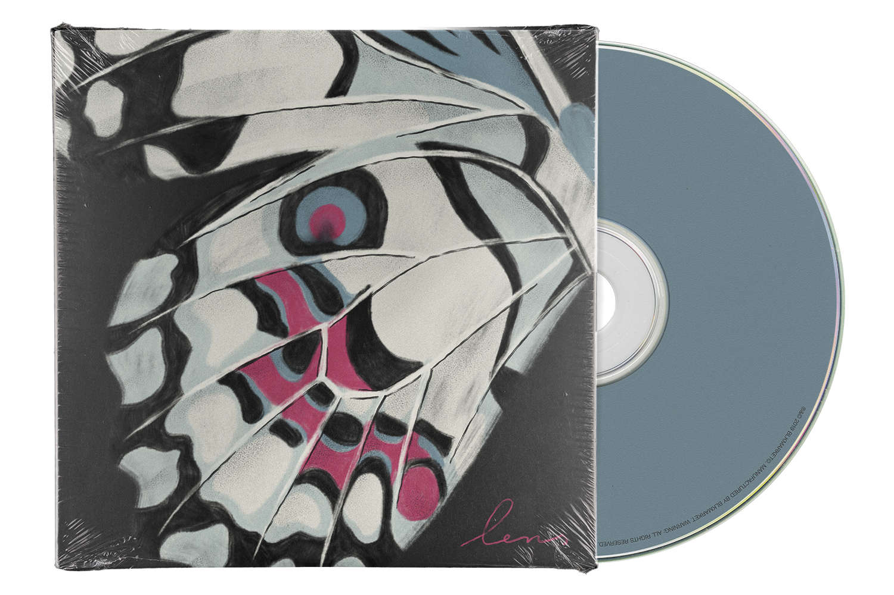
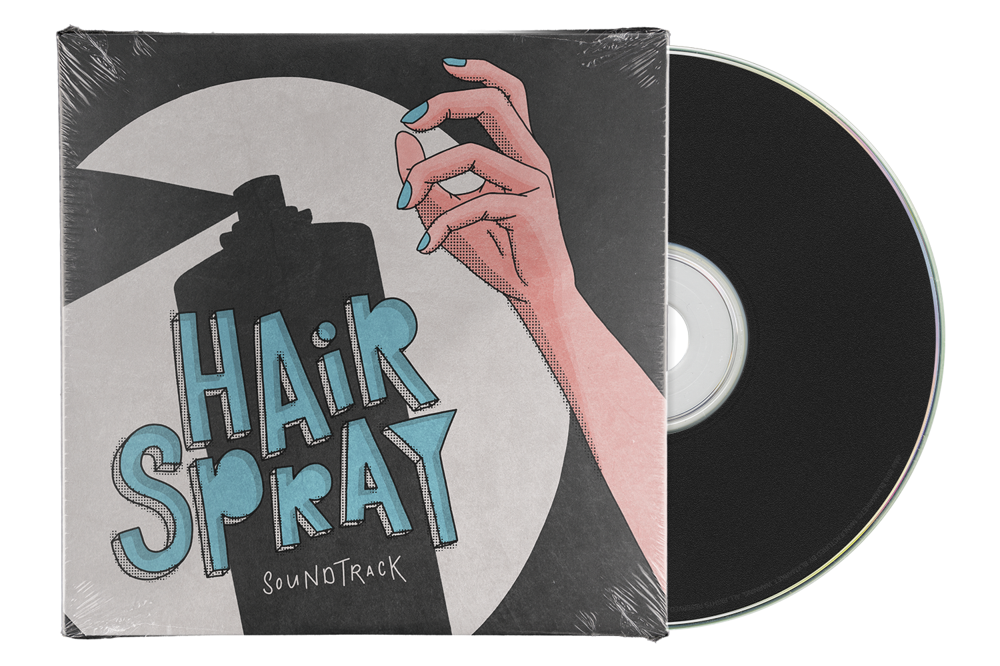
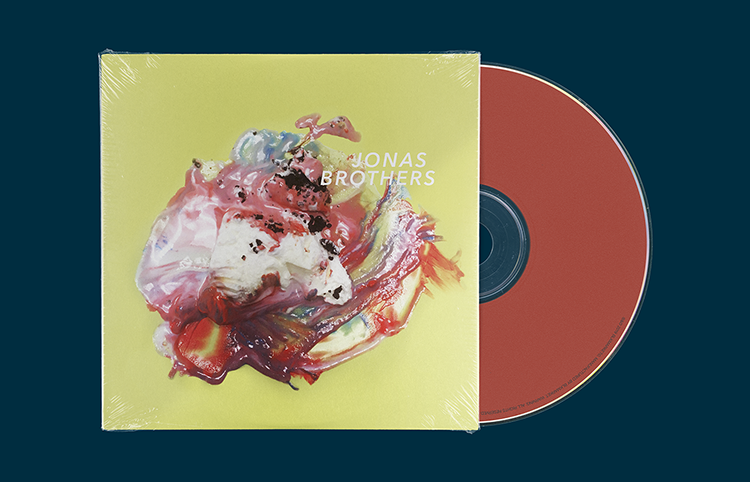
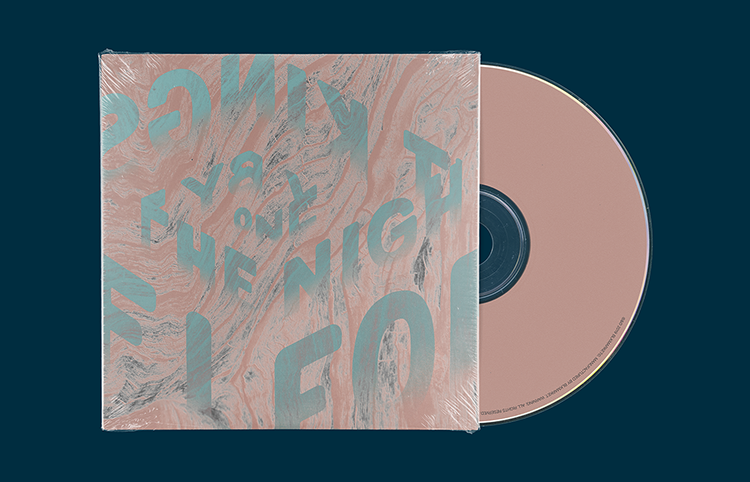
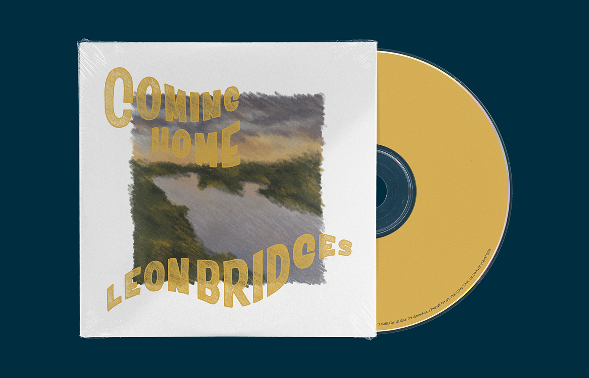
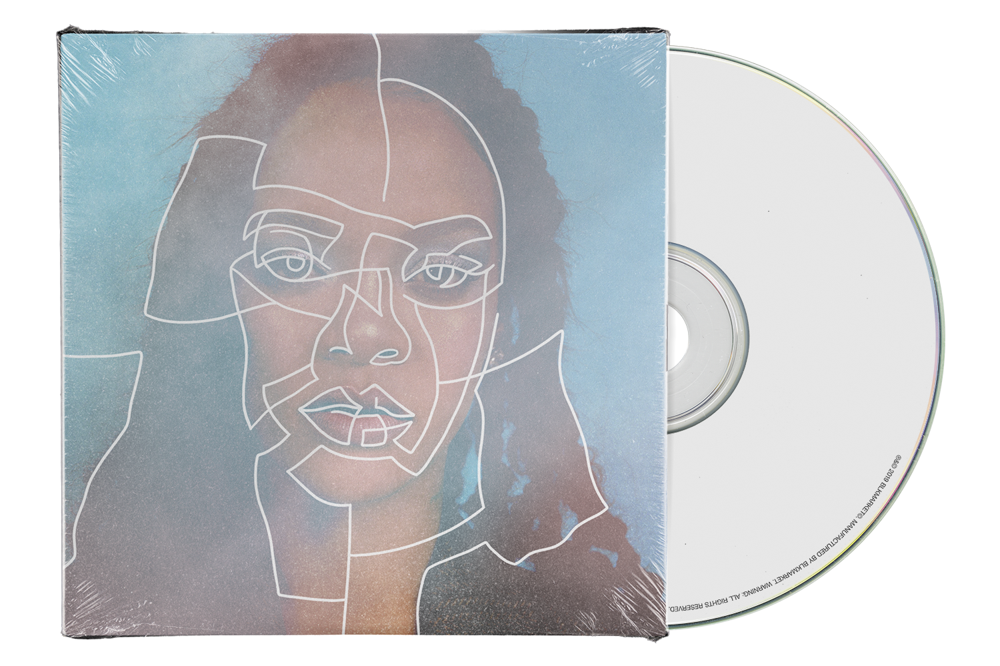

TEN WORKS OF ALBUM ART
Whenever anyone would ask me what my dream job would be, my immediate answer was always: design album artwork. I decided to start a passion project that would combine my love for design and music, and recreate the album artwork for my Top 10 favourite albums of all time. I used this opportunity to explore different types of design, illustration and lettering.








